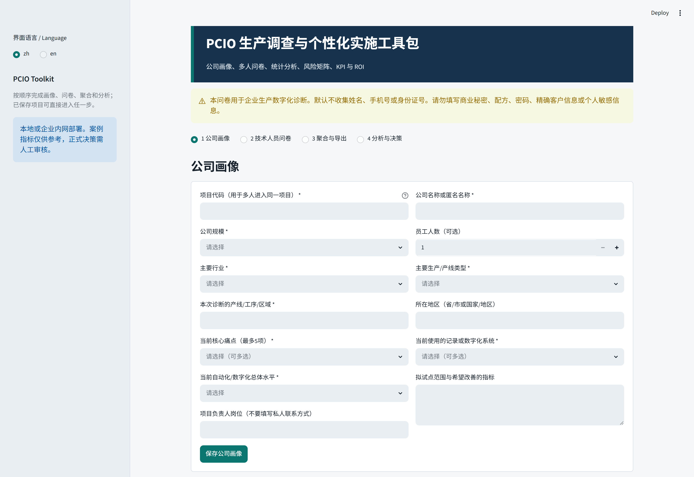
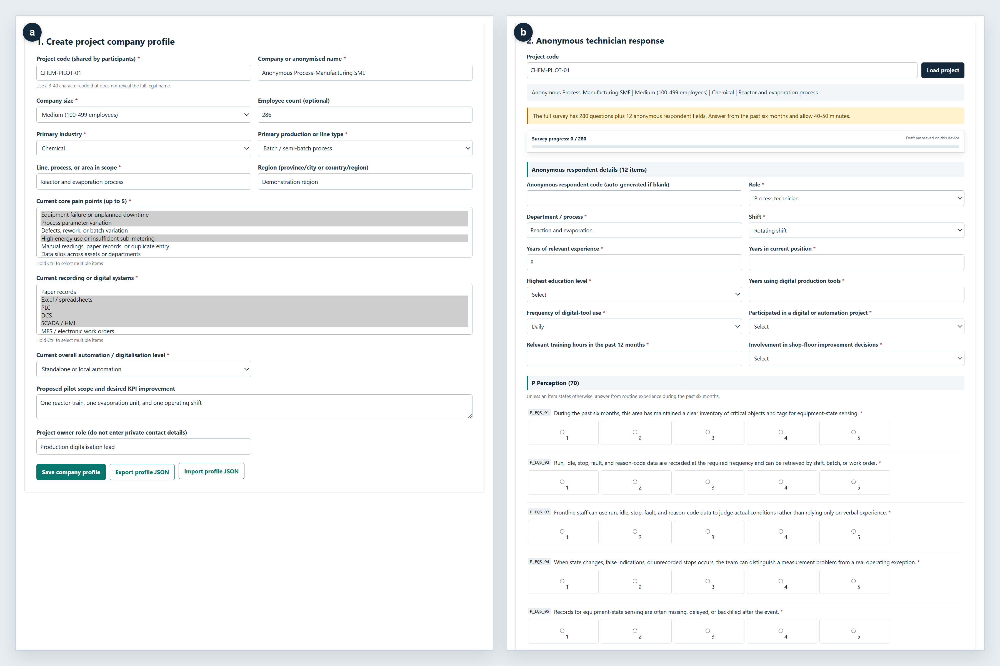
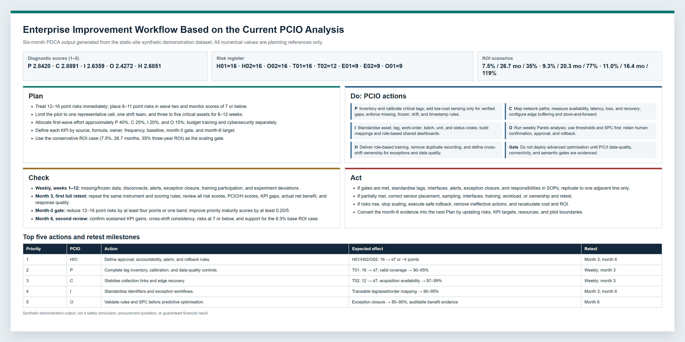
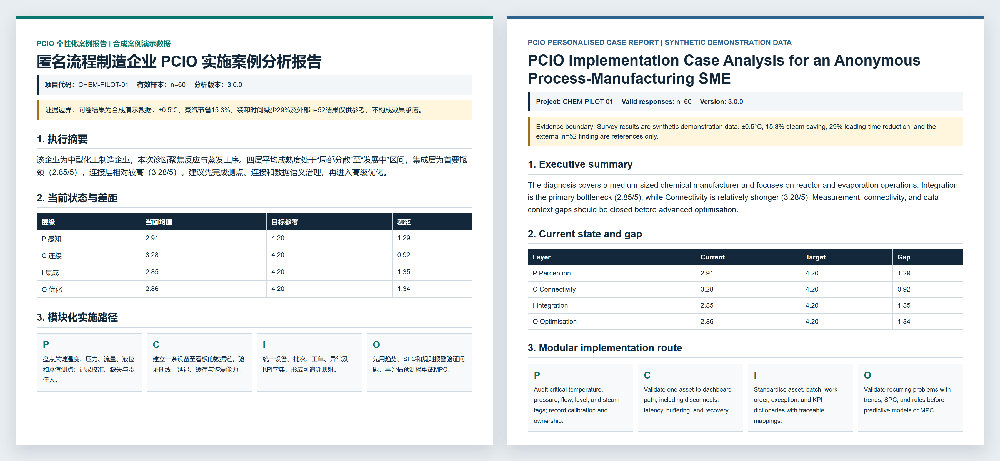

Organisation Profile

The profile module defines diagnostic context, such as process manufacturing or tank-area storage and operations. It does not show precise addresses, customers, suppliers, or real equipment information.
Module Demonstration
This page shows anonymised or synthetic examples of the main modules. It does not use original enterprise screenshots or sensitive data.
The figures below are anonymised or synthetic examples. Synthetic cases demonstrate workflow and rule response only; real T0 cases are used only for baseline diagnosis.

The profile module defines diagnostic context, such as process manufacturing or tank-area storage and operations. It does not show precise addresses, customers, suppliers, or real equipment information.

The survey items support PCIO baseline mapping. The current real case samples are small and should be used for baseline description and formative fit checking, not for psychometric validation or large-sample inference.

| Risk Type | Trigger | Output | Human Confirmation |
|---|---|---|---|
| Data coverage gap | Weak perception items or inconsistent data definitions | Candidate risk prompt | Confirm data sources for key assets or areas |
| Unstable process-asset mapping | Connectivity responses indicate mapping gaps | Medium-priority risk | Confirm whether workflows and system records match |
| Insufficient optimisation evidence | Missing trackable KPIs in insight or optimisation layers | Precondition prompt | Confirm KPI definitions and owners |

| KPI Type | Suggested Indicator | Purpose | Boundary |
|---|---|---|---|
| Data foundation | Completeness of key data fields | Assess diagnostic data basis | Does not imply business outcomes changed |
| Process control | Completeness of exception-closure records | Support issue tracking | Requires field verification of record definitions |
| Retest preparation | T1/T2 retest completion rate | Support future longitudinal evaluation | No follow-up result is currently available |

The ROI module supports discussion of assumptions and alternatives. Its outputs should be described as scenario estimation or planning comparison, not as real benefit validation.

The report module produces structured review materials. Exported content should remain anonymised, summarised, and evidence-bounded.